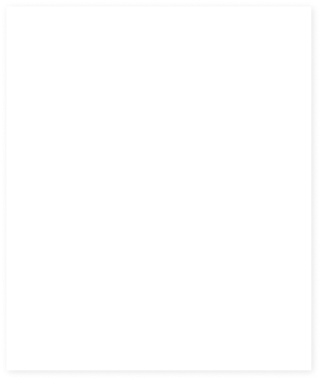

목적지를 향해 나아가는 디자이너 조유진입니다
About Me
어제보다 오늘 더 선명한 결과물
저에게 디자인은 모호함을 명확함으로 바꾸어 나가는 여정입니다.
발자취를 남길 수록 흐릿해지는 것이 아닌, 경험을 쌓을 수록 더욱 선명해지는 발걸음을 남기며 브랜드의 가치를 뚜렷하게 전달하고자 합니다.
처음의 설렘을 잊지 않되, 앞으로 내딛는 한 걸음 한 걸음이 서비스의 성정에 기여하는 선명한 지표가 될 수 있도록 멈추지 않고 나아가겠습니다.
Project
Promotion

상세페이지 01.
스킨푸드
토마토선크림


상세페이지 02.
어떤하루 By 녹동양조
고흥 유자 막걸리

상세페이지 03.
세임디
마레 오벌 플레이트

이벤트페이지 01.
텐퍼센트
프리퀀시 이벤트

배너 이미지 01.
해피문데이
홈 배너

배너 이미지 02.
모바일 배너
네이버 홈
UI | Logo Design

반응형 웹페이지 01.
글로벌 언어교환 서비스
LangSwap

반응형 웹페이지 02.
반려동물 돌봄 중개 서비스
PawMate

앱 디자인 01.
감정 기록 앱
감보기

로고 디자인 01.
감정 기록 앱
감보기